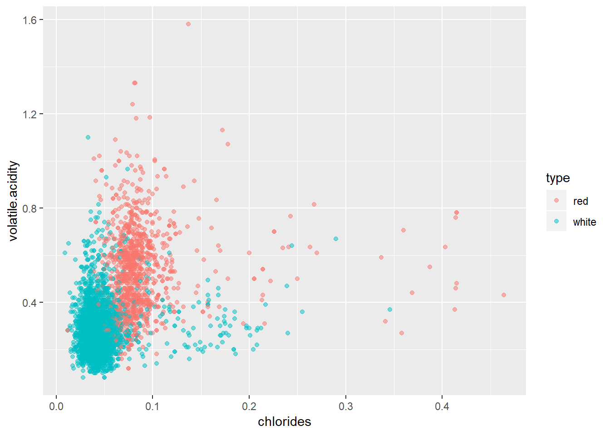

14 Introduction to Predictive Modeling
14.1 What is predictive modeling?
In the previous chapter, we have shown that with the help of linear regression we can investigate and model the interplay of two (or more) variables. If there is collinearity between the two observed variables, then their relation can be modeled with the help of a simple straight line equation, which then allows to estimate the value of the second variable from the known value of one of the variables. This is the basic idea of so-calle. “predictive modeling” - a process which relies on familiar inputs and developed predictive models to get information about unknown outputs, i.e. goals. Better models provide better, or more accurate results. Or, as defined by Kuhn and Johnson in his book “Applied Predictive Modeling”:
Predictive modeling is a process of developing a mathematical tool or model that is able to create accurate predictions.
Predictive modeling has numerous usage options in various domains eg:
- predicting the quantity of sold products or expected profits
- identification of users planning to cancel the subscription
- disease diagnostics
- real estate evaluation
- estimation of movies’s profits on opening weekened
- spam detection
- etc.
When developing predictive models, it is very important to:
- have adequately prepared, high quality input data
- choose a suitable method for creating a model
- properly conduct the evaluation and validation process
The role of analysts in this process is to conduct all the steps of analysis thoroughly and to avoid common traps and errors. Namely, predictive models can ultimately have poor performance for a number of reasons - poorly prepared data, poorly conducted validation, creating models which “overfit” the training data, etc.
In this chapter, we will get acquainted with some of the basic guidelines we must adhere to during predictive modeling. We will also familiarize ourselves with R language packages that allow us to leave complex steps to the computer, that is, to approach predictive modelling from high-level perspective while the computer independently performs low-level data preparation, modeling, and validation steps.
14.2 Creating training and test datasets
When we created linear models in the previous chapter, after the creation of the model, we looked at summarized model information with the help of summary function - estimation of predictor and target relationship, the value of residual standard error, the value of adjusted R-squared measure etc. This information has enabled us to evaluate the quality of developed models.
But in the whole process we ignored one key thing - all of this information was based on data used to create the model itself. In other words, we have gained insight into how well a model works over known data, which the model has already seen during the model’s creation. As a rule, it is much more important to evaluate how well a model works over unknown data, i.e. to estimate the quality of predictions once the model gets completely new data. We say that we want models that generalize well, i.e. models that have learned generic features of the domain entities described in theobtained data, and not just the specifics of the dataset used to develop the model itself. This latter phenomenon is called “overfitting”.
Very often, at the time of creating a model, we only have one dataset that we should also for training and model evaluation. As we have already said, using the same data for both purposes does not give us enough good information about how the model generalizes. A common procedure in this case is to split the initial set into two parts - a training set and a test set.
How do you decide which observations to assign to which set? How many observations should be put into training, and how many in the testing set? As a rule, the training set and test set should have enough observations so that the obtained results could be statistically relevant so assuming a sufficiently large input dataset, splitting in two equal parts could be a satisfactory solution. However, in practice, we usually reserve more observations for training than for testing, so it is customary to use a 70:30 spluit, so 70% observations go into the training set, and the rest go in the test set.
As for the procedure of selecting observations (i.e. “sampling”), there are several common procedures:
- random selection
- stratified random selection (ensuring equal representation of certain categories in both sets)
- timestamp-based selection (if the time component is key, i.e. it is important to estimate how well past information predicts future events)
Random selection is a most commonly used method while more sophisticated sampling methods can be chosen if there is a clear need for them based on the goals of the analysis.
Let’s now apply this knowledge to the development of a linear regression model by comparing its effectiveness on the training set, and then on the test data. For this we will use a new set of data related to the characteristics and quality of wine, wines.csv. This set was created by adapting the “Wine Quality Data Set” from the UCI Machine Learning Repository, available at[this link] (https://archive.ics.uci.edu/ml/datasets/wine+quality).
In the next exercise, we’ll load this dataset and make some adjustments - we’ll categorize columns that obviously contain a category variable and remove rows with missing values. Lines with missing values often require a little more attention and a more sophisticated approach than simple removal, especially with larger amounts of missing values or potential additional information that these values denote. But in our case there are very few such rows, and when applying certain predictive modeling methods, they can create problems, so we will simply remove them. One of the quick ways to do this is by using the complete.cases function, which returns the indexes of all rows which do not have any missing value for the given data frame.
Zadatak 14.1 - wine quality dataset
# load data from the` wines.csv` file
# in a variable called `wine`
# examine the loaded data frame
# categorize columns as needed
# and remove rows with missing values # load data from the` wines.csv` file
# in a variable called `wine`
# examine the loaded data frame
# categorize columns as needed
# and remove rows with missing values
wine <- read.csv("wines.csv", stringsAsFactors = F, encoding = "UTF-8")
glimpse(wine)
wine$type <- factor(wine$type)
wine <- wine[complete.cases(wine),]## Observations: 6,497
## Variables: 13
## $ fixed.acidity <int> 7, 63, 81, 72, 72, 81, 62, 7, 63, 81, 81,...
## $ volatile.acidity <dbl> 0.27, 0.30, 0.28, 0.23, 0.23, 0.28, 0.32,...
## $ citric.acid <dbl> 0.36, 0.34, 0.40, 0.32, 0.32, 0.40, 0.16,...
## $ residual.sugar <dbl> 20.70, 1.60, 6.90, 8.50, 8.50, 6.90, 7.00...
## $ chlorides <dbl> 0.045, 0.049, 0.050, 0.058, 0.058, 0.050,...
## $ free.sulfur.dioxide <int> 45, 14, 30, 47, 47, 30, 30, 45, 14, 28, 1...
## $ total.sulfur.dioxide <int> 170, 132, 97, 186, 186, 97, 136, 170, 132...
## $ density <dbl> 1.0010, 0.9940, 0.9951, 0.9956, 0.9956, 0...
## $ pH <int> 3, 33, 326, 319, 319, 326, 318, 3, 33, 32...
## $ sulphates <dbl> 0.45, 0.49, 0.44, 0.40, 0.40, 0.44, 0.47,...
## $ alcohol <dbl> 88, 95, 101, 99, 99, 101, 96, 88, 95, 11,...
## $ quality <int> 6, 6, 6, 6, 6, 6, 6, 6, 6, 6, 5, 5, 5, 7,...
## $ type <chr> "white", "white", "white", "white", "whit...Suppose the attribute quality is the target variable and all the other columns are potential predictors.
How do you split this set on the training set and test set using random selection? There are several ways to do this, and even specialized functions and packages for this purpose, but we will learn a simple and easy-to-understand method that uses the sample function. If we assume that df is the data frame that we want to split into a training and test set that we will store in df.train and df.test variables, then random selection can be done as follows:
train_size <- 0.7 * nrow(df) %>% round # about 70%
train_ind <- sample(1:nrow(df), train_size) # indexes of training observations
df.train <- df[train_ind, ]
df.test <- df[-train_ind, ]Let’s apply this to our wines dataset and then train a linear regression model.
Zadatak 14.2 - Splitting the input dataset and training a model
set.seed(1234)
# split the `wine` dataframe into `wine.train` and `wine.test`
# using a random selection method and 70:30 ratio
# train a linear regression model using the `wine.train` set
# store the model in a variable called `linMod`
# target variable is `quality` and all other variables are predictors
# check the summary for the obtained model# train a linear regression model using the `wine.train` set
# store the model in a variable called `linMod`
# target variable is `quality` and all other variables are predictors
# check the summary for the obtained model
linMod <- lm(quality ~ ., data = wine.train)
summary(linMod)##
## Call:
## lm(formula = quality ~ ., data = wine.train)
##
## Residuals:
## Min 1Q Median 3Q Max
## -3.1979 -0.5375 -0.0454 0.5078 4.9346
##
## Coefficients:
## Estimate Std. Error t value Pr(>|t|)
## (Intercept) 9.723e+01 4.451e+00 21.843 < 2e-16 ***
## fixed.acidity -4.744e-04 4.133e-04 -1.148 0.251125
## volatile.acidity -1.351e+00 1.011e-01 -13.366 < 2e-16 ***
## citric.acid 3.106e-01 9.469e-02 3.280 0.001047 **
## residual.sugar 1.648e-03 4.832e-04 3.411 0.000654 ***
## chlorides -3.657e+00 4.188e-01 -8.733 < 2e-16 ***
## free.sulfur.dioxide 1.041e-04 2.445e-04 0.426 0.670234
## total.sulfur.dioxide 1.090e-04 9.830e-05 1.109 0.267442
## density -9.150e+01 4.484e+00 -20.404 < 2e-16 ***
## pH -7.765e-05 1.259e-04 -0.617 0.537511
## sulphates 8.632e-01 9.224e-02 9.358 < 2e-16 ***
## alcohol 3.983e-16 3.991e-16 0.998 0.318384
## typewhite -3.714e-01 4.514e-02 -8.229 2.44e-16 ***
## ---
## Signif. codes: 0 '***' 0.001 '**' 0.01 '*' 0.05 '.' 0.1 ' ' 1
##
## Residual standard error: 0.7853 on 4533 degrees of freedom
## Multiple R-squared: 0.1851, Adjusted R-squared: 0.183
## F-statistic: 85.82 on 12 and 4533 DF, p-value: < 2.2e-16We see that the adjusted R-squared measure is relatively low and the average error is quite high, so linear regression is perhaps not the best option this scenario (or maybe the obtained characteristics of the wines are simply not good enough to predict its quality). In spite of this, we will now check how well the model works on unseen observations.
In order to check the quality of our model, we have to choose the criterion to which we will adhere. For numeric goals we often use the RMSE measure (root mean square error):
\[RMSE = \sqrt{\frac{\sum_{i = 1}^{n}(\widehat{y}_{i} - y_{i})}{n}}\]
where n is the number of observations,\(\widehat{y}_{i}\) prediction of the observation i and \(y_ {i}\) actual value of the target variable of that observation.
Although there are packages that contain this function, we can easily program it ourselves.
Zadatak 14.3 - Function for calculating the RMSE measure
# create a `rmse` function that will use prediction vector
# and a vector of actual target vales as parameters
# and calculate the RMSE measure according to the above formulaLet us now add prection columns to wine.train andwine.test datasets and then calculate the value of the RMSE measure for both.
Zadatak 14.4 - Model evaluation for the training and test set
# add a `predQualityLR` column to `wine.train` and `wine.test`
# using the `predict` function and the `linMod` model
# print the value of the RMSE measure for both sets
# remove the `predQualityLR` column from the `wine.train` dataset# add a `predQualityLR` column to `wine.train` and `wine.test`
# using the `predict` function and the `linMod` model
wine.train$predQualityLR <- predict(linMod, wine.train)
wine.test$predQualityLR <- predict(linMod, wine.test)
# print the value of the RMSE measure for both sets
rmse(wine.train$predQualityLR, wine.train$quality)
rmse(wine.test$predQualityLR, wine.test$quality)
# remove the `predQualityLR` column from the `wine.train` dataset
wine.train$predQualityLR <- NULL## [1] 0.7841708
## [1] 0.8078178We see that the RMSE for the training set roughly corresponds to the residual standard error obtained in the model summary (a small difference is a result of the fact that we used the total number of observations, while in the calculation of the residual standard error we used the number of degrees of freedom - “dependent” variables, i.e. predictors). What is interesting is the fact that the value of RMSE measure of the test set is not dramatically larger than the RMSE measure, which means that the model works almost equally well (or badly) on new data.
14.3 Classification Predictive Models - kNN Classification
The linear regression method allowed us to “guess” the numerical target variable. It is reasonable to ask the question - can we build a predictive model that will try to estimate the value of a categoric variable? This is an extremely important goal of predictive modeling since many domains have problems with determining the value of a particular category (the patient is ill or not, the device is corrupt or correct, the transaction is regular ora result of fraud, the client will default on the loan or not etc.)
These are so-called “classification” problems for which - just as for the “regression” problems which use numerical goals - there is an extremely large set of developed methods. Very often, similar methods can be used for both purposes (sometimes with certain adjustments), so for example even if linear regression is not specifically suited for classification problems, its related “logistic regression” method is a very effective and popular approach to such a type of problem.
In this section, we will focus on another, very popular classification method, which is very intuitive and easy to understand, but which allows us to inspect a number of interesting predictive modeling elements that we have not mentioned so far. It is a method called “k nearest neighbors”, or “kNN classification”.
This method works in a very simple way. If we do not know the category of some observation, we simply find a number of observations which are the “closest” to that new observation. We then look at their categories, and then by majority vote determine which category to assign to the new observation. Let’s try to visualize this.
Zadatak 14.5 - Visualization of the main idea for the method of kNN classification
# create a scatterplot for `wine.train` dataset
# put `chlorides` on `x` axis
# and `volatile.acidity` on `y` axis
# color point based on wine type
# set the transparency of the points to 0.5# create a scatterplot for `wine.train` dataset
# put `chlorides` on `x` axis
# and `volatile.acidity` on `y` axis
# color point based on wine type
# set the transparency of the points to 0.5
ggplot(wine.train, aes(chlorides, volatile.acidity, col = type)) + geom_point(alpha = 0.5)
On the graph we can clearly see how the points form “clusters” of the same colors in certain areas. If we take a new observation regarding the wine of an unknown type, but the known values of the measures set on the x and y axes, by looking at its immediate neighborhood, we could conclude which type of wine the new wine belongs to. Observations deep within one of the “clouds” are very likely to belong to the type shown (although we see that there are exceptions!). On the other hand, observation within the “boundary” areas is much more likely to be misdiagnosed, and the different choice of neighboring numbers could result in different classification results.
kNN classification is based on the concept of distance. Although there are different options for distance selection, we often rely on the so-called “Euclidean distance”, which is easily presented in the two- and three-dimensional Cartesian system by the shortest path between two points, and we can easily calculate its value using their coordinates and Pythagorean theorem. This distance is easily applied to n-dimensional spaces, so although we can not easily visualize points in a space whose dimension corresponds to the number of predictors, we can still easily calculate the value of the Euclidean distance between points.
So, the way kNN classification works can be easily described as follows:
- the training set itself represents “domain knowledge”, that is, the predictive model itself
- for each new observation, we find k closest observations from the training set and assign the category to it by using the majority vote
Although this process is relatively simple, there are some common questions which require answers. Firstly - how do we select the parameter k? Secondly, do we need to make some additional preparatory actions on the data set before we perform the kNN classification?
Let’s deal with the second question first. Examine the graph we have drawn, more precisely its coordinate axes. We can see that the lengths of the axes do not necessarily scale to their numerical values equally, i.e. the unit interval on the x axis is not necessarily equal to the unit interval on y axis. This is normal and expected, since the values on axes do not necessarily have to use the same scale nor even the measuring unit. But there is one problem - when we use Euclidean distance, it treats all axes equally, which means that variables with larger ranges will automatically gain greater importance (e.g. the maximum value of the chlorides is around 0.611 while the maximum value of sulfur dioxide variable reaches over 3000!)
Here we see the importance of data pre-processing . For kNN classification, normalization of numeric variables is recommended, i.e. the transformation of numeric variables in such a way that we deduct their average and divide them by standard deviation, which brings them all to the same scale. This process is somewhat more complex than it seems, because we have to make sure that new observations are also normalized in the same way. This means that we need to make sure both training and test numerical variables need to come from the same distribution. If we have enough data and both training and test observations are representative, then their means and standard deviations should be close enough so we can easily normalize each set independently. If we have small test sets, then the normalization of the test set should be done by remembering using the mean and standard deviation of the training set.
To simplify this process somwhat, we will return to the original wine dataset and simply normalize the numeric columns beforehand, and then store it in the wineNorm variable (we can pretend that we knew means and standard deviations of populations of these variables beforehand so we used them to normalize both training and test set independetly). Then, we will split this set into sets of wineNorm.train andwineNorm.test analogously to the previous procedure.
`r zadHead(“Normalization of numeric variables of the input dataset”)
# normalize all numeric columns of the `wine` data frame
# store the result in the `wineNorm` variable
# use the `train_ind` object to split `wineNorm`
# into `wineNorm.train` and `wineNorm.test`# normalize all the numeric columns of the `wine` data frame
# store the result in the `wineNorm` variable
wineNorm <- lapply(wine, function(x) {
if(is.numeric(x))(x - mean(x)) / sd(x)
else x
})%>% as.data.frame
# use the `train_ind` object to split `wineNorm`
# into `wineNorm.train` and `wineNorm.test`
wineNorm.train <- wineNorm[train_ind,]
wineNorm.test <- wineNorm[-train_ind,]Let’s go back to the problem of selecting the value of the k parameter. How to pick the right value? Generally speaking, this problem is called “choosing a hyperparameter of a model,” since the model besides input data requires some additional input parameters to perform its function. Usually, when no mathematical method of calculating optimal hyperparameters exist, the only option we have is training models with various combinations of hyperparameters and finally selecting those hyperparameter which result in models showing the best performance. In this case, we often need another (third) part of the original dataset, usually called a “validation” dataset, which represents an additional step before testing the set in which we select the values of the hyperparameters for the “final” model. Specifically, for kNN classification:
- we train a larger number of models for different parameter values
kover the training set - with the help of the validation set, we find the model that has the best performance and choose its
k - we use chosen
kand the entire training and validation set to train the model - we make a final evaluation on the test set
Below we will use a simplified version of this process which uses only the training and test set while setting the k parameter arbitrarily to 5. We will leave the entire process of possibly finding a better hyperparameter as an optional exercise. Likewise, as we will see at the end of this chapter, we often do not manually program instruction for finding best hyperparameters, but rather use high-level functions which allow us to only set things up declaratively, without having to deal with low-grade details about the implementation of the process itself.
Let’s try to see if we can properly classify wine as “white” or “red” with the help of variables describing its chemical composition. We will use the kNN method, with the number of neighbors set to 5. Predictors will be all available variables except quality andtype.
For kNN classification the base R offers the knn function . For our needs we will use the knn3 function from thecaret package. The function knn3 expands the basic knn function in a way that allows us to call it by following the standard programming conventions we have already learned when training linear regression models:
model <- selected_method(formula, training_dataset, additional_parameters)
predictions <- predict(model, test_dataset, additional_parameters)In the case of the knn3 function, an additional parameter in training the model is k, set to 5. When creating predictions, we will set the type parameter to class, meaning we want to predict the class itself (alternative is probs, returning predicted probabilities for each class).
Let’s try to create a kNN model with the help of wineNorm.train and then find wine type predictions for wineNorm.test.
Zadatak 14.6 - kNN Classification
# create the variable `kNN5Mod` which will be
# the result of calling `knn3` over the `wineNorm.train` set
# target variable is `type`
# predictors are all other variables except `quality`
# add a `predictedType` column to `wineNorm.test`
# which will store a result of calling the `predict` function
# with `kNN5Mod` as a model and `wineNorm.test` as new data
# set the `type` parameter to `class`# create the variable `kNN5Mod` which will be
# the result of calling `knn3` over the `wineNorm.train` set
# target variable is `type`
# predictors are all other variables except `quality`
#library(caret) # if needed
kNN5Mod <- knn3(type ~ . - quality, data = wineNorm.train, k = 5)
# add a `predictedType` column to `wineNorm.test`
# which will store a result of calling the `predict` function
# with `kNN5Mod` as a model and `wineNorm.test` as new data
# set the `type` parameter to `class`
wineNorm.test$predictedType <- predict(kNN5Mod, wineNorm.test, type = "class")Note that we did not look for a model summary since we can not get too much information in this case. The kNN classifier can not provide us with some aggregated information about “learned” knowledge, it is just a “map of the domain space” that is then used for each new observation to determine which category it belongs to.
How do we check the classifier’s performance? A typical procedure (with binary classifiers) is the creation of a so-calle “confusion matrix”. This simply means that we will create a table that will show how well the predicted values match the actual values. The easiest way to create this table is simply to call the table function with the prediction column and the actual value column as parameters.
Zadatak 14.7 - Simple Configuration Matrix
# print a confusion matrix by calling the `table` function
# over the appropriate columns of the `wineNorm.test` dataset# print a confusion matrix by calling the `table` function
# over the appropriate columns of the `wineNorm.test` dataset
table(wineNorm.test$predictedType, wineNorm.test$type)##
## red white
## red 476 14
## white 9 1450Looking at the results we can intuitively conclude that in this case the classifier works extremely well, that is, white and red wines can be very easily classified by looking at their chemical properties. But we often want to describe the quality of the classifier using an objective, numerical measure. There are a number of such measures, and most of them can be directly calculated using values from the confusion matrix.
Specifically, if we call the confusion matrix cells TP, TN, FP, FN (true positive, true negative, false positive, false negative), where we treat one class as “positive” and hence assigning the names of the corresponding cells depending on whether the classifier correctly guessed the class (main diagonal) or not (side diagonal). In this case, from the confusion matrix we can directly calculate the following measures:
- accuracy: \(\frac{TP + TN}{TP + FP + TN + FN}\)
- sensitivity (recall): \(\frac{TP}{TP + FN}\)
- precision: \(\frac{TP}{TP + FP}\)
- false positive rate/false negative rate: \(\frac{FP}{FP + TN}\) ; \(\frac{FN}{TP + FN}\)
- etc.
These are just some of the possible measures. Although accuracy may be the most logical choice (because we actually get a percentage of correctly guessed observations), we often have to be careful because it can give us a distorted picture of the classifier’s effectiveness, especially in when there is a huge disbalance in categories or when one type of error is far more dangerous than the other. A typical example is the diagnosis of rare diseases - if the disease occurs in only 0.1% of cases, then the trivial classifier, which for all observations diagnoses that the disease is not present, works well in 99.9% cases. Also, if it is a dangerous disease, then FP error (the disease is diagnosed although not present) is far less important than FN errors (the disease is present but is not recognized). In these cases, selecting another measure (eg “sensitivity” or “false negative rate”) is often a much better quality indicator of the classifier.
We can very easily manually calculate all these measures using base R. However, the confusionMatrix function from the caret package (which also leverages the e1071 package) gives us the same result as the table function but with the added convenience of computing a large number of measures that can help us evaluate the classifier’s quality.
Zadatak 14.8 - confusionMatrix function
# create a variable called `confMat` variable
# which will stort the result of the `confusionMatrix` function
# using the appropriate columns of the `wineNorm.test` dataset as parameters
# print the `confMat` variable# create a variable called `confMat` variable
# which will stort the result of the `confusionMatrix` function
# using the appropriate columns of the `wineNorm.test` dataset as parameters
#library(e1071) # if needed
#library(caret) # if needed
confMat <- confusionMatrix(wineNorm.test$predictedType, wineNorm.test$type)
# print the `confMat` variable
confMat## Confusion Matrix and Statistics
##
## Reference
## Prediction red white
## red 476 14
## white 9 1450
##
## Accuracy : 0.9882
## 95% CI : (0.9823, 0.9925)
## No Information Rate : 0.7512
## P-Value [Acc > NIR] : <2e-16
##
## Kappa : 0.9685
## Mcnemar's Test P-Value : 0.4042
##
## Sensitivity : 0.9814
## Specificity : 0.9904
## Pos Pred Value : 0.9714
## Neg Pred Value : 0.9938
## Prevalence : 0.2488
## Detection Rate : 0.2442
## Detection Prevalence : 0.2514
## Balanced Accuracy : 0.9859
##
## 'Positive' Class : red
## Since the variable confMat is an S3 object, with the help of the unlist function and the selection of the desired element, we can easily obtain only the numeric value of the measure we are interested in. This is useful if we want to integrate this function in our programming scripts.
14.4 Package caret and predictive modeling
In the previous chapter we were already introduced to the caret package, more specifically some of its functions that help us with predictive modeling. This package actually offers a lot more than we have seen. Specifically, the caret package provides a set of tools to effectively perform all elements of the predictive modeling process:
- splitting data
- pre-processing of data
- feature selection
- adjusting the model with the help of re-sampling
- variable importance estimation
As the dplyr package actually changes the way we use the R language to manage the data frames, so thecaret package enables a thorough modification of the predictive modeling approach used when programming in R. The functions of the caret package not only provide a cleaner syntax for low-level jobs, they also give the possibility of leveraging high-level approach for predictive modeling, where we declare declarative calls for what we want to do, and let R do low-level jobs returning us the corresponding result.
Details of this package can be found at [this link] (https://topepo.github.io/caret/index.html), and below we will only give you a brief insight into some of the most useful features of this package.
To demonstrate the declarative nature of predictive modeling with this package, we will look at two functions: train andtrainControl.
The train function is actually a generic interface to a large number of predictive models (a list of all the models currently supported by the function can be [found here] (http://topepo.github.io/caret/train-models-by-tag.html) . In a large number of cases, the this function call is not different from the call of the predictive modeling method functions we have learned so far, specifically lm andknn3. The biggest difference is that instead of calling a specific function, here we define the method of predictive modeling using the method parameter.
Let’s try to train a linear regression model using the train function and the previously prepared wine.train dataset.
Zadatak 14.9 - train function and linear regression
# using the `train` function from the `caret` package
# train a linear regression model using the `wine.train` dataset
# target variable is `quality` and all other variables are predictors
# set the `method` `"lm"`
# store the resuling model in a variable called `linMod`# using the `train` function from the `caret` package
# train a linear regression model using the `wine.train` dataset
# target variable is `quality` and all other variables are predictors
# set the `method` `"lm"`
# store the resuling model in a variable called `linMod`
linMod <- train(quality ~., data = wine.train, method = "lm")
# read the summary of the obtained model
summary(linMod)##
## Call:
## lm(formula = .outcome ~ ., data = dat)
##
## Residuals:
## Min 1Q Median 3Q Max
## -3.1979 -0.5375 -0.0454 0.5078 4.9346
##
## Coefficients:
## Estimate Std. Error t value Pr(>|t|)
## (Intercept) 9.723e+01 4.451e+00 21.843 < 2e-16 ***
## fixed.acidity -4.744e-04 4.133e-04 -1.148 0.251125
## volatile.acidity -1.351e+00 1.011e-01 -13.366 < 2e-16 ***
## citric.acid 3.106e-01 9.469e-02 3.280 0.001047 **
## residual.sugar 1.648e-03 4.832e-04 3.411 0.000654 ***
## chlorides -3.657e+00 4.188e-01 -8.733 < 2e-16 ***
## free.sulfur.dioxide 1.041e-04 2.445e-04 0.426 0.670234
## total.sulfur.dioxide 1.090e-04 9.830e-05 1.109 0.267442
## density -9.150e+01 4.484e+00 -20.404 < 2e-16 ***
## pH -7.765e-05 1.259e-04 -0.617 0.537511
## sulphates 8.632e-01 9.224e-02 9.358 < 2e-16 ***
## alcohol 3.983e-16 3.991e-16 0.998 0.318384
## typewhite -3.714e-01 4.514e-02 -8.229 2.44e-16 ***
## ---
## Signif. codes: 0 '***' 0.001 '**' 0.01 '*' 0.05 '.' 0.1 ' ' 1
##
## Residual standard error: 0.7853 on 4533 degrees of freedom
## Multiple R-squared: 0.1851, Adjusted R-squared: 0.183
## F-statistic: 85.82 on 12 and 4533 DF, p-value: < 2.2e-16We see that we get the same result as when we called the lm function directly at the beginning of this chapter.
Note that in this case we haven’t used a large number of parameters of the train function that we can see in the documentation. For example, using the preprocess parameter can automatically perform some data preparation procedures such as normalization, BoxCox transformation, imputation of missing values, and so on.
Let’s create a little more complex predictive model now. First, let’s examine a “control object” we can create using a function called trainControl.
This function provides us with a “control panel” which allows us to fine-tune all parameters related to the training of our predictive model. Some of these parameters relate to so-called “data re-sampling” - this means that we can get a better estimate of the behavior of developed predictive models if we perform a process called “cross-validation”, where the training set is split multiple times and then a model is trained over and over again, always using a separate holdover part as the test set. In this way we actually get a number of models, each with their own results, which give us information not only about the quality but also the stability of the model.
Additionally, we have the option of tweaking additional parameters, such as which summary funcation we want to apply on the resulting model, or whether we want the model (in the case of classification) to return the probabilities or just the resulting category. When finally create such a “control object”, we can recycle it as much as we want in the future steps of predictive modeling without the need to enter a large number of training-related parameters every time.
A simple control object can look like this:
# We use repeated cross-validation with 5 repeats
ctrl <- trainControl(method = "repeatcv",
repeats = 5)## Warning: `repeats` has no meaning for this resampling method.Finally, let’s try to use two slightly more advanced methods of predictive modeling - the random forest method (the ranger method from the package of a same name) and the support vector method (thesvmRadial method from the kernlab) package. We will not go deeper into the details of these methods, just focus on how to call them with the help of the trainCtrl andtrain functions.
In the following code we will also leverage a function called expand.grid. This function requires a vector different values of the hyperparameters we have provided, and will result in a dataframe containing all combinations of these hyperparameters. It is most commonly used in conjunction with the tuneGrid parameter to assign the candidate sets for predictive model hyperparameter - in this way, the train function will try out all combinations of the default parameters and (in conjunction with the cross validation method) select the parameters that showcase the best performance for the final model.
#library(ranger) # if needed
#library(kernlab) # if needed
# we will use the same control object for both models
# set `verboseIter` to TRUE
# for better insight into training speed!
ctrl <- trainControl(
method = "repeatedcv",
number = 5,
repeats = 2,
verboseIter = FALSE)
# random forest model
rfMod <- train(quality ~.,
data = wine.train,
method = 'ranger',
tuneLength = 10,
trControl = ctrl,
num.trees = 10)
# support vector model
# we use a grid of hyperparameters
# and pre-process data with normalization
svm.grid <- expand.grid(C = c(2, 4, 8), sigma = c(0.25, 1, 2))
svmMod <- train(quality ~.,
data = wine.train,
method = "svmRadial",
trControl = ctrl,
tuneGrid = svm.grid,
preProcess = c("center", "scale"))Finally, we make a simple evaluation of the model with the help of RMSE measures.
Zadatak 14.10 - Easy Model Evaluation
# with the help of the `predict` function and` rfMod` and `svmMod` models
# add `predQualityRF` and `predQualitySVM` columns to `wine.test` dataset
# print the value of the RMSE measure for all obtained models# with the help of the `predict` function and` rfMod` and `svmMod` models
# add `predQualityRF` and `predQualitySVM` columns to `wine.test` dataset
wine.test$predQualityRF <- predict(rfMod, wine.test)
wine.test$predQualitySVM <- predict(svmMod, wine.test)
# print the value of the RMSE measure for all obtained models
cat("RMSE Linear regression:", rmse(wine.test$predQualityLR, wine.test$quality))
cat("\nRMSE Random Forest:", rmse(wine.test$predQualityRF, wine.test$quality))
cat("\nRMSE Support Vectors:", rmse(wine.test$predQualitySVM, wine.test$quality))## RMSE Linear regression: 0.8078178
## RMSE Random Forest: 0.6772888
## RMSE Support Vectors: 0.7011601
Programirajmo u R-u by Damir Pintar is licensed under a Creative Commons Attribution-NonCommercial-NoDerivatives 4.0 International License.
Based on a work at https://ratnip.github.io/FER_OPJR/